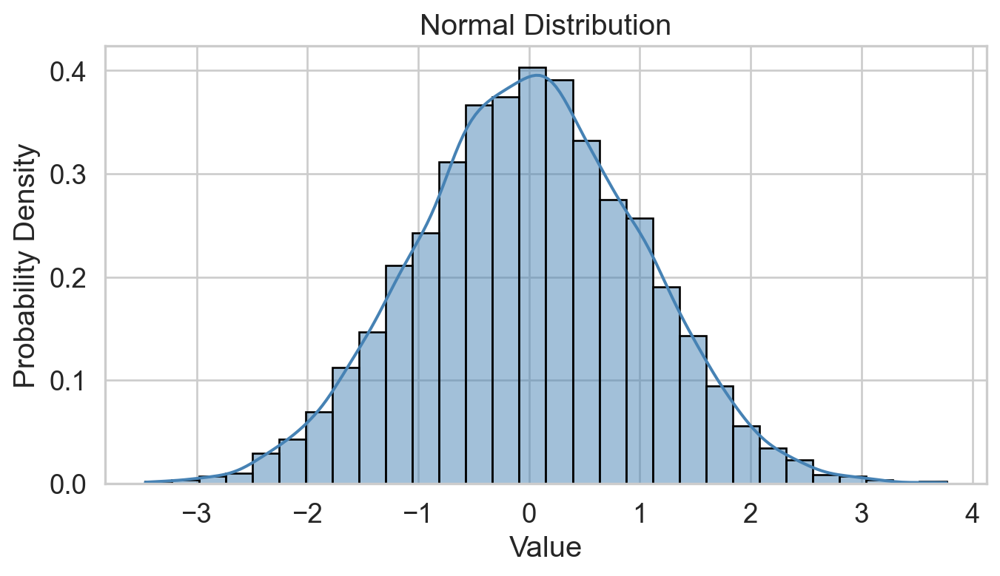
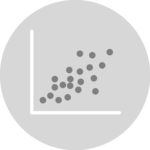

# Import all required libraries
import pandas as pd
import numpy as np
import seaborn as sns
import matplotlib.pyplot as plt
import scipy.stats as stats
from scipy.stats import skewnorm
from scipy.stats import kurtosis, norm
from scipy.stats import gamma
import missingno as msno
import random
import statsmodels.api as sm
# Increase font size of all Seaborn plot elements
sns.set(font_scale = 1.25)
# Load in UK Smoking Data
births14 = pd.read_csv("data/births14.csv")
# Set seed
random.seed(123)Exploratory Data Analysis + Data Visualization
Lecture 3
John Chen
University of Arizona
INFO 523 - Fall 2025
Warm up
Announcements
HW 01 is due tonight, 11:59pm
RQ #2 is due Feb 07, 11:59pm
Project 01 peer-review is Feb 07, first round proposals are due before class
Setup
Exploratory Data Analysis
What is exploratory data analysis?
Exploratory data analysis is a statistical, approach towards analyzing data sets to investigate and summarize their main characteristics, often through statistical graphics and other data visualization methods.
What is exploratory data analysis?
Examining data
| fage | mage | mature | weeks | premie | visits | gained | weight | lowbirthweight | sex | habit | marital | whitemom | |
|---|---|---|---|---|---|---|---|---|---|---|---|---|---|
| 0 | 34.0 | 34 | younger mom | 37 | full term | 14.0 | 28.0 | 6.96 | not low | male | nonsmoker | married | white |
| 1 | 36.0 | 31 | younger mom | 41 | full term | 12.0 | 41.0 | 8.86 | not low | female | nonsmoker | married | white |
| 2 | 37.0 | 36 | mature mom | 37 | full term | 10.0 | 28.0 | 7.51 | not low | female | nonsmoker | married | not white |
| 3 | NaN | 16 | younger mom | 38 | full term | NaN | 29.0 | 6.19 | not low | male | nonsmoker | not married | white |
| 4 | 32.0 | 31 | younger mom | 36 | premie | 12.0 | 48.0 | 6.75 | not low | female | nonsmoker | married | white |
<class 'pandas.core.frame.DataFrame'>
RangeIndex: 1000 entries, 0 to 999
Data columns (total 13 columns):
# Column Non-Null Count Dtype
--- ------ -------------- -----
0 fage 886 non-null float64
1 mage 1000 non-null int64
2 mature 1000 non-null object
3 weeks 1000 non-null int64
4 premie 1000 non-null object
5 visits 944 non-null float64
6 gained 958 non-null float64
7 weight 1000 non-null float64
8 lowbirthweight 1000 non-null object
9 sex 1000 non-null object
10 habit 981 non-null object
11 marital 1000 non-null object
12 whitemom 1000 non-null object
dtypes: float64(4), int64(2), object(7)
memory usage: 101.7+ KB| fage | mage | weeks | visits | gained | weight | |
|---|---|---|---|---|---|---|
| count | 886.000000 | 1000.000000 | 1000.000000 | 944.000000 | 958.000000 | 1000.000000 |
| mean | 31.133183 | 28.449000 | 38.666000 | 11.351695 | 30.425887 | 7.198160 |
| std | 7.058135 | 5.759737 | 2.564961 | 4.108192 | 15.242527 | 1.306775 |
| min | 15.000000 | 14.000000 | 21.000000 | 0.000000 | 0.000000 | 0.750000 |
| 25% | 26.000000 | 24.000000 | 38.000000 | 9.000000 | 20.000000 | 6.545000 |
| 50% | 31.000000 | 28.000000 | 39.000000 | 12.000000 | 30.000000 | 7.310000 |
| 75% | 35.000000 | 33.000000 | 40.000000 | 14.000000 | 38.000000 | 8.000000 |
| max | 85.000000 | 47.000000 | 46.000000 | 30.000000 | 98.000000 | 10.620000 |
Always do these first thing after loading in data
Group descriptive statistics
# Example with the premie column
groups = births14.groupby('premie').describe().unstack(1)
# Print all rows
print(groups.to_string()) premie
fage count full term 775.000000
premie 111.000000
mean full term 30.967742
premie 32.288288
std full term 6.681591
premie 9.226826
min full term 15.000000
premie 15.000000
25% full term 26.000000
premie 27.000000
50% full term 31.000000
premie 32.000000
75% full term 35.000000
premie 36.000000
max full term 49.000000
premie 85.000000
mage count full term 876.000000
premie 124.000000
mean full term 28.329909
premie 29.290323
std full term 5.721104
premie 5.982052
min full term 14.000000
premie 16.000000
25% full term 24.000000
premie 24.000000
50% full term 28.000000
premie 30.000000
75% full term 33.000000
premie 34.000000
max full term 44.000000
premie 47.000000
weeks count full term 876.000000
premie 124.000000
mean full term 39.376712
premie 33.645161
std full term 1.469571
premie 3.009993
min full term 37.000000
premie 21.000000
25% full term 38.000000
premie 33.000000
50% full term 39.000000
premie 35.000000
75% full term 40.000000
premie 36.000000
max full term 46.000000
premie 36.000000
visits count full term 829.000000
premie 115.000000
mean full term 11.516285
premie 10.165217
std full term 3.884353
premie 5.329380
min full term 0.000000
premie 0.000000
25% full term 10.000000
premie 7.000000
50% full term 12.000000
premie 10.000000
75% full term 14.000000
premie 12.000000
max full term 30.000000
premie 30.000000
gained count full term 839.000000
premie 119.000000
mean full term 30.410012
premie 30.537815
std full term 15.021661
premie 16.785683
min full term 0.000000
premie 0.000000
25% full term 20.000000
premie 20.000000
50% full term 30.000000
premie 29.000000
75% full term 38.000000
premie 41.000000
max full term 98.000000
premie 85.000000
weight count full term 876.000000
premie 124.000000
mean full term 7.434178
premie 5.530806
std full term 1.021699
premie 1.801182
min full term 3.930000
premie 0.750000
25% full term 6.770000
premie 4.500000
50% full term 7.440000
premie 5.750000
75% full term 8.082500
premie 6.572500
max full term 10.620000
premie 9.250000Outliers
Outliers = 1.5 * Interquartile range
Assess outliers visually
Find outliers
fage q25 = 26.0 q75 = 35.0 IQR = 9.0
lower, upper: 12.5 48.5
Number of Outliers: 7
mage q25 = 24.0 q75 = 33.0 IQR = 9.0
lower, upper: 10.5 46.5
Number of Outliers: 1
weeks q25 = 38.0 q75 = 40.0 IQR = 2.0
lower, upper: 35.0 43.0
Number of Outliers: 72
visits q25 = 9.0 q75 = 14.0 IQR = 5.0
lower, upper: 1.5 21.5
Number of Outliers: 30
gained q25 = 20.0 q75 = 38.0 IQR = 18.0
lower, upper: -7.0 65.0
Number of Outliers: 26
weight q25 = 6.545 q75 = 8.0 IQR = 1.455
lower, upper: 4.362 10.183
Number of Outliers: 32# Make a copy of the births14 data
dataCopy = births14.copy()
# Select only numerical columns
dataRed = dataCopy.select_dtypes(include = np.number)
# List of numerical columns
dataRedColsList = dataRed.columns[...]
# For all values in the numerical column list from above
for i_col in dataRedColsList:
# List of the values in i_col
dataRed_i = dataRed.loc[:,i_col]
# Define the 25th and 75th percentiles
q25, q75 = round((dataRed_i.quantile(q = 0.25)), 3), round((dataRed_i.quantile(q = 0.75)), 3)
# Define the interquartile range from the 25th and 75th percentiles defined above
IQR = round((q75 - q25), 3)
# Calculate the outlier cutoff
cut_off = IQR * 1.5
# Define lower and upper cut-offs
lower, upper = round((q25 - cut_off), 3), round((q75 + cut_off), 3)
# Print the values
print(' ')
# For each value of i_col, print the 25th and 75th percentiles and IQR
print(i_col, 'q25 =', q25, 'q75 =', q75, 'IQR =', IQR)
# Print the lower and upper cut-offs
print('lower, upper:', lower, upper)
# Count the number of outliers outside the (lower, upper) limits, print that value
print('Number of Outliers: ', dataRed_i[(dataRed_i < lower) | (dataRed_i > upper)].count())q25: 1/4 quartile, 25th percentile;q75: 3/4 quartile, 75th percentileIQR: interquartile range, \(IQR = q75-q25\)lower;upper: lower, upper limit of \(1.5\times IQR\) used to calculate outliers
Remove outliers
# Select numerical columns
numerical_cols = births14.select_dtypes(include = ['number']).columns
for col in numerical_cols:
# Find Q1, Q3, and interquartile range (IQR) for each column
Q1 = births14[col].quantile(0.25)
Q3 = births14[col].quantile(0.75)
IQR = Q3 - Q1
# Upper and lower bounds for each column
lower_bound = Q1 - 1.5 * IQR
upper_bound = Q3 + 1.5 * IQR
# Filter out the outliers from the DataFrame
births14_clean = births14[(births14[col] >= lower_bound) & (births14[col] <= upper_bound)]Why are there still outliers?
Missing values (NaN)
Missing values (NaN) visually

Describe categorical variables
Analysis for mature:
Unique Levels: ['younger mom' 'mature mom']
Counts:
mature
younger mom 841
mature mom 159
Name: count, dtype: int64
Proportions:
mature
younger mom 0.841
mature mom 0.159
Name: proportion, dtype: float64
--------------------------------------------------
Analysis for premie:
Unique Levels: ['full term' 'premie']
Counts:
premie
full term 876
premie 124
Name: count, dtype: int64
Proportions:
premie
full term 0.876
premie 0.124
Name: proportion, dtype: float64
--------------------------------------------------
Analysis for lowbirthweight:
Unique Levels: ['not low' 'low']
Counts:
lowbirthweight
not low 919
low 81
Name: count, dtype: int64
Proportions:
lowbirthweight
not low 0.919
low 0.081
Name: proportion, dtype: float64
--------------------------------------------------
Analysis for sex:
Unique Levels: ['male' 'female']
Counts:
sex
male 505
female 495
Name: count, dtype: int64
Proportions:
sex
male 0.505
female 0.495
Name: proportion, dtype: float64
--------------------------------------------------
Analysis for habit:
Unique Levels: ['nonsmoker' 'smoker' nan]
Counts:
habit
nonsmoker 867
smoker 114
Name: count, dtype: int64
Proportions:
habit
nonsmoker 0.883792
smoker 0.116208
Name: proportion, dtype: float64
--------------------------------------------------
Analysis for marital:
Unique Levels: ['married' 'not married']
Counts:
marital
married 594
not married 406
Name: count, dtype: int64
Proportions:
marital
married 0.594
not married 0.406
Name: proportion, dtype: float64
--------------------------------------------------
Analysis for whitemom:
Unique Levels: ['white' 'not white']
Counts:
whitemom
white 765
not white 235
Name: count, dtype: int64
Proportions:
whitemom
white 0.765
not white 0.235
Name: proportion, dtype: float64
--------------------------------------------------
# Select categorical columns
categorical_cols = births14.select_dtypes(include = ['object', 'category']).columns
# Initialize a dictionary to store results
category_analysis = {}
# Loop through each categorical column
for col in categorical_cols:
counts = births14[col].value_counts()
proportions = births14[col].value_counts(normalize=True)
unique_levels = births14[col].unique()
# Store results in dictionary
category_analysis[col] = {
'Unique Levels': unique_levels,
'Counts': counts,
'Proportions': proportions
}
# Print results
for col, data in category_analysis.items():
print(f"Analysis for {col}:\n")
print("Unique Levels:", data['Unique Levels'])
print("\nCounts:\n", data['Counts'])
print("\nProportions:\n", data['Proportions'])
print("\n" + "-"*50 + "\n")Conditions of normality

Histogram: bell-shaped curve
Skewness: Close to 0 for symmetry; Kurtosis: Close to 3 for normal “tailedness.”
Sample Size: Larger samples are less sensitive to non-normality.
Empirical Rule: 68-95-99.7% rule (data within 1, 2, and 3 st dev. of the mean).
Skewness
- Several definitions
- Sensitive to outliers
- Designed for one peak (unimodal)
- Mean and median are inconclusive from skew alone
Kurtosis
- Several definitions…
- Sensitive to outliers
- Designed for one peak (unimodal)
Q-Q plot
Testing normality: data shape
Code
# Change theme to "white"
sns.set_style("white")
# Make a copy of the data
dataCopy = births14.copy()
# Remove NAs
dataCopyFin = dataCopy.dropna()
# Specify desired column
i_col = dataCopyFin.weight
# Subplots
fig, (ax1, ax2) = plt.subplots(ncols = 2, nrows = 1)
# Density plot
sns.kdeplot(i_col, linewidth = 5, ax = ax1)
ax1.set_title('Newborn Weight Density plot')
# Q-Q plot
sm.qqplot(i_col, line='s', ax = ax2)
ax2.set_title('Newborn Weight Q-Q plot')
plt.tight_layout()
plt.show()Positive-skew (left-tailed)
Code
# Change theme to "white"
sns.set_style("white")
# Make a copy of the data
dataCopy = births14.copy()
# Select only numerical columns
dataRed = dataCopyFin.select_dtypes(include=np.number)
# Fill the subplots
for k in dataRed.columns:
# Create a figure with two subplots
fig, (ax1, ax2) = plt.subplots(ncols = 2, nrows = 1)
# Density plot
sns.kdeplot(dataRed[k], linewidth = 5, ax = ax1)
ax1.set_title(f'{k} Density Plot')
# Q-Q plot
sm.qqplot(dataRed[k], line = 's', ax = ax2)
ax2.set_title(f'{k} QQ Plot')
plt.tight_layout()
plt.show()Conclusions
Inspect all data immediately
Assess outliers and missing values
Assess normality
Make corrections as needed (more next time)
Exploratory plotting
Data visualization
The practice of designing and creating easy-to-communicate and easy-to-understand graphic or visual representations of a large amount of complex quantitative and qualitative data and information with the help of static, dynamic or interactive visual items.
My definition: telling a story with your data, visually.
Why storytelling?

Epic of Gilgamesh (c. 2100 BC)
First known “hero’s journey”
Goal: Apply storytelling to your visuals
Aircraft-Wildlife Collisions

Aircraft-Wildlife Collisions
| opid | operator | atype | remarks | phase_of_flt | ac_mass | num_engs | date | time_of_day | state | height | speed | effect | sky | species | birds_seen | birds_struck | |
|---|---|---|---|---|---|---|---|---|---|---|---|---|---|---|---|---|---|
| 0 | AAL | AMERICAN AIRLINES | MD-80 | NO DAMAGE | Descent | 4.0 | 2.0 | 1990-09-30 | Night | IL | 7000.0 | 250.0 | NaN | No Cloud | UNKNOWN BIRD - MEDIUM | NaN | 1 |
| 1 | USA | US AIRWAYS | FK-28-4000 | 2 BIRDS, NO DAMAGE. | Climb | 4.0 | 2.0 | 1993-11-29 | Day | MD | 10.0 | 140.0 | NaN | No Cloud | UNKNOWN BIRD - MEDIUM | 10-Feb | 10-Feb |
| 2 | AAL | AMERICAN AIRLINES | B-727-200 | NaN | Approach | 4.0 | 3.0 | 1993-08-13 | Day | TN | 400.0 | 140.0 | NaN | Some Cloud | UNKNOWN BIRD - SMALL | 10-Feb | 1 |
| 3 | AAL | AMERICAN AIRLINES | MD-82 | NaN | Climb | 4.0 | 2.0 | 1993-10-07 | Day | VA | 100.0 | 200.0 | NaN | Overcast | UNKNOWN BIRD - SMALL | NaN | 1 |
| 4 | AAL | AMERICAN AIRLINES | MD-82 | NO DAMAGE | Climb | 4.0 | 2.0 | 1993-09-25 | Day | SC | 50.0 | 170.0 | NaN | Some Cloud | UNKNOWN BIRD - SMALL | 10-Feb | 1 |
<class 'pandas.core.frame.DataFrame'>
RangeIndex: 19302 entries, 0 to 19301
Data columns (total 17 columns):
# Column Non-Null Count Dtype
--- ------ -------------- -----
0 opid 19302 non-null object
1 operator 19302 non-null object
2 atype 19302 non-null object
3 remarks 16516 non-null object
4 phase_of_flt 17519 non-null object
5 ac_mass 18018 non-null float64
6 num_engs 17995 non-null float64
7 date 19302 non-null datetime64[ns]
8 time_of_day 17225 non-null object
9 state 18431 non-null object
10 height 16109 non-null float64
11 speed 12294 non-null float64
12 effect 1973 non-null object
13 sky 15723 non-null object
14 species 19302 non-null object
15 birds_seen 4764 non-null object
16 birds_struck 19263 non-null object
dtypes: datetime64[ns](1), float64(4), object(12)
memory usage: 2.5+ MB| ac_mass | num_engs | date | height | speed | |
|---|---|---|---|---|---|
| count | 18018.00 | 17995.00 | 19302 | 16109.00 | 12294.00 |
| mean | 3.36 | 2.10 | 1994-08-25 09:46:40.994715520 | 754.68 | 136.10 |
| min | 1.00 | 1.00 | 1990-01-08 00:00:00 | 0.00 | 0.00 |
| 25% | 3.00 | 2.00 | 1992-08-18 00:00:00 | 0.00 | 110.00 |
| 50% | 4.00 | 2.00 | 1994-10-01 00:00:00 | 40.00 | 130.00 |
| 75% | 4.00 | 2.00 | 1996-09-13 18:00:00 | 500.00 | 150.00 |
| max | 5.00 | 4.00 | 1999-10-16 00:00:00 | 32500.00 | 400.00 |
| std | 1.01 | 0.57 | NaN | 1795.81 | 44.64 |
{seaborn}
Seaborn is a Python data visualization library based on matplotlib. It provides a high-level interface for drawing attractive and informative statistical graphics.

Some data viz rules
ALWAYS make custom titles (axes, legends)
Use color blind friendly color palettes
Use either the
whitegridorwhitethemesDon’t clutter with unnecessary information
Use annotations to aid the reader
Use the Golden Ratio: 0.625, or 8in/5in
Exploratory visuals
How to choose a plot
One Numeric Variable
Histogram
- Frequency Distribution
- Easy to Interpret
- Identifies Patterns
Density Plot

- Smooth Distribution Curve
- Highlights Density
- Comparative Analysis
Histograms
Histograms: bins

Density Plot
Two Numeric Variables
Scatterplot

- Relationship Visualization
- Outlier Identification
- Pattern Recognition
2D Density Plot

- Density Distributions
- Combine Contour and Color
- Complex Data Interpretation
Scatterplots
Scatterplots - color
Scatterplots - size + color
Scatterplots - linear relationships
Scatterplots - grouped relationships
2D Density Plots
2D Density plots: contours
2D Density plots: filled contours
Two Ordered Numeric Variables
Line Plot
- Trend Identification
- Simple and Clear
- Comparative Analysis
Area Plot

- Cumulative Representation
- Emphasizes Volume
- Layered Comparisons
Line Plot
Line Plot: grouped lines
One Categorical
Barplot

- Categorical Comparison
- Clear Visualization
- Versatile Use
Pie Chart

- Proportional Representation
- Simple Interpretation
- Visual Appeal
Barplot
Pie Chart
Can’t use {seaborn}
One Numerical + One Categorical
Boxplot

- Displays Quartiles
- Identifies Outliers
- Comparative Analysis
Violin chart

- Density Representation
- Richer Data Insight
- Visualizes Data Spread
Boxplots
Trim axes
Violin Plots
Violin Plots: paired
Violin Plots: quartiles + split
Cleaning up our plots
My minimum expectation:
Aside: Correlations
Code
sns.set_theme(style = "white")
birds_num = birds.select_dtypes(include = 'number')
corr = birds_num.corr()
mask = np.triu(np.ones_like(corr, dtype = bool))
f, ax = plt.subplots(figsize = (8, 6))
cmap = sns.diverging_palette(230, 20, as_cmap = True)
sns.heatmap(corr, mask = mask, cmap = cmap, vmax = 0.5, center = 0,
square = True, linewidths = .5, cbar_kws = {"shrink": 0.5})
plt.show()Lastly: Pairgrids
Diwali sales data: metadata
| variable | class | description |
|---|---|---|
| User_ID | double | User identification number |
| Cust_name | character | Customer name |
| Product_ID | character | Product identification number |
| Gender | character | Gender of the customer (e.g. Male, Female) |
| Age Group | character | Age group of the customer |
| Age | double | Age of the customer |
| Marital_Status | double | Marital status of customer (Married, Single) |
| State | character | State of the customer |
| Zone | character | Geographic zone of the customer |
| Occupation | character | Occupation of the customer |
| Product_Category | character | Category of the product |
| Orders | double | Number of orders made by the customer |
| Amount | double | Amount in Indian rupees spent by the customer |
Livecoding: Diwali sales data
diwali = pd.read_csv('https://raw.githubusercontent.com/rfordatascience/tidytuesday/master/data/2023/2023-11-14/diwali_sales_data.csv', encoding = 'iso-8859-1')
diwali.head()| User_ID | Cust_name | Product_ID | Gender | Age Group | Age | Marital_Status | State | Zone | Occupation | Product_Category | Orders | Amount | |
|---|---|---|---|---|---|---|---|---|---|---|---|---|---|
| 0 | 1002903 | Sanskriti | P00125942 | F | 26-35 | 28 | 0 | Maharashtra | Western | Healthcare | Auto | 1 | 23952.0 |
| 1 | 1000732 | Kartik | P00110942 | F | 26-35 | 35 | 1 | Andhra Pradesh | Southern | Govt | Auto | 3 | 23934.0 |
| 2 | 1001990 | Bindu | P00118542 | F | 26-35 | 35 | 1 | Uttar Pradesh | Central | Automobile | Auto | 3 | 23924.0 |
| 3 | 1001425 | Sudevi | P00237842 | M | 0-17 | 16 | 0 | Karnataka | Southern | Construction | Auto | 2 | 23912.0 |
| 4 | 1000588 | Joni | P00057942 | M | 26-35 | 28 | 1 | Gujarat | Western | Food Processing | Auto | 2 | 23877.0 |
Code
# Examine data
diwali.info()
# Data types
diwali.dtypes
# Describe numerical columns
diwali.describe()
# Describe categories
diwali.describe(exclude = [np.number])
# Unique levels
categorical_cols = diwali.select_dtypes(include = ['object', 'category']).columns
unique_levels = diwali[col].unique()
# Outliers
# Make a copy of the diwali data
dataCopy = diwali.copy()
# Select only numerical columns
dataRed = dataCopy.select_dtypes(include = np.number)
# List of numerical columns
dataRedColsList = dataRed.columns[...]
# For all values in the numerical column list from above
for i_col in dataRedColsList:
# List of the values in i_col
dataRed_i = dataRed.loc[:,i_col]
# Define the 25th and 75th percentiles
q25, q75 = round((dataRed_i.quantile(q = 0.25)), 3), round((dataRed_i.quantile(q = 0.75)), 3)
# Define the interquartile range from the 25th and 75th percentiles defined above
IQR = round((q75 - q25), 3)
# Calculate the outlier cutoff
cut_off = IQR * 1.5
# Define lower and upper cut-offs
lower, upper = round((q25 - cut_off), 3), round((q75 + cut_off), 3)
# Print the values
print(' ')
# For each value of i_col, print the 25th and 75th percentiles and IQR
print(i_col, 'q25 =', q25, 'q75 =', q75, 'IQR =', IQR)
# Print the lower and upper cut-offs
print('lower, upper:', lower, upper)
# Count the number of outliers outside the (lower, upper) limits, print that value
print('Number of Outliers: ', dataRed_i[(dataRed_i < lower) | (dataRed_i > upper)].count())
# Missing values
diwali.isnull().sum()
# Normality - qq plot
# Change theme to "white"
sns.set_style("white")
# Make a copy of the data
dataCopy = diwali.copy()
# Remove NAs
dataCopyFin = dataCopy.dropna()
# Specify desired column
i_col = dataCopyFin.Amount
# Subplots
fig, (ax1, ax2) = plt.subplots(ncols = 2, nrows = 1)
# Density plot
sns.kdeplot(i_col, linewidth = 5, ax = ax1)
ax1.set_title('Amount spent (₹)')
# Q-Q plot
sm.qqplot(i_col, line = 's', ax = ax2)
ax2.set_title('Amount spent Q-Q plot')
plt.tight_layout()
plt.show()